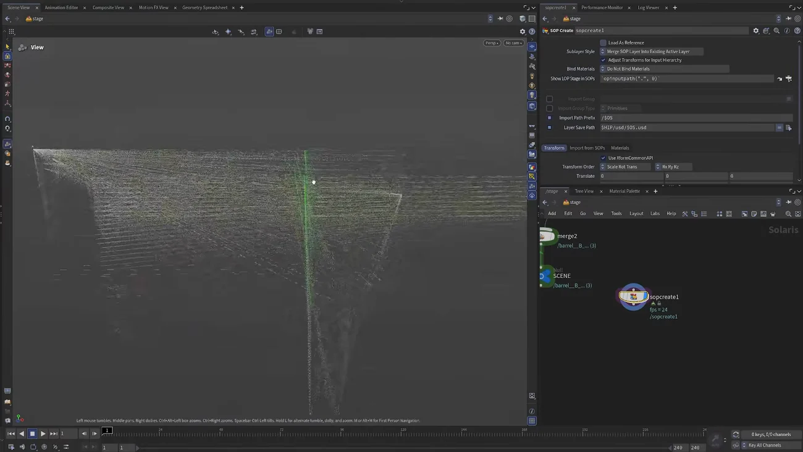

Solaris の中で APEX キャラをアニメートする
出典: Houdini 22 | How to APEX Animate in LOPs （SideFX 公式「Houdini 22 How-To」の1本 / Houdini 22 / 8:40 / 英語）。 このページは、上記の動画を見ながら自分用にまとめた日本語の学習メモです。SideFX 公式の翻訳ではありません。
何が嬉しいのか
ライトもセットも入った本番のシーンを見ながらアニメーションを付けられることです。 SOP で付けて Solaris で確認、という往復が要らなくなります。
この回では2つの流儀を両方やります。
- Solaris で直接付ける
- SOP で付けて Solaris に持ち込む
関連ノードはまだ beta 表示ですが動きます。
1. Solaris で直接アニメートする
/stageに SOP Create を置きます- 中に Electra（Asset Browser のキャラ）を置き、 出力を APEX Character に設定します。Solaris はこれを明示的に要求します
Uで Solaris に戻って SOP Create にフラグを立てると、妙な見た目のものが表示されます

これは APEX リグそのものです。 リグロジックは点に書かれていて、Solaris は「ジオメトリ・スケルトン・リグ」を全部そのまま描いてしまいます。
Solaris は APEX リグの扱い方を知らないので、明示的に指示する必要があります。 この画面は、その状態がそのまま見えているものです。
画面を散らかさない小技
SOP Create の中に Box を置いて Output ノードに繋ぎます。 外から見た出力が常に box になるので画面が散らかりません。 Output ノードなのでフラグの位置は関係ありません。
Foundations のレッスン3で出てきた 「Output ノードを置くと表示フラグの位置に関係なく最後が出る」性質を、 こういう使い方に転用しているのが面白いところです。
持ち込む
- キャラを Null に繋いで
Electraと命名します（必須ではありませんが整理のためです） - Solaris に戻って APEX Character Import を置き、 さきほどの Null をコピーして SOP Path に貼ります
mergeでキャラとシーンを合流させます- Animate ノードを置けばもうアニメートできます
2人目を足す
- SOP Create に戻ってもう1つ Electra を置き、
Electra Bと命名します - Null をコピーして APEX Character Import に貼ります
- チェーンに差せば2人がシーンに並びます
出力を APEX Character にし忘れると読めません。 講師もここで一度失敗して言い直しています。
以降は普通のシーン構築と同じで、ライト・オブジェクト・キャラをいくらでも足せます。
2. SOP で付けて Solaris に持ち込む
逆の流儀です。シーンを SOP Create の入力に流し込みます。 すると SOP の中にシーンの簡易表現が入ります。
- 不要になった前のノードは削除しておきます（混乱の元になります）
- SOP Create の中で APEX Add Character を使います。
Electra は第2入力に差し、
Electra Aと命名。もう1つ作ってElectra B - ここでアニメートします
- 結果を Null に繋いで
apex_scene_outと命名し、パスを確定させます
どちらを選ぶかですが、SOP のほうが動作が軽快だったり、 単に SOP に慣れているならこちらでよいと説明されています。 本番のライティングを見ながら付けたいなら Solaris 側、という分け方になりそうです。
この回のまとめ
- ライトとセットが入った本番シーンを見ながらアニメートできるのがこの機能の価値です
- 出力を APEX Character にするのが必須です。忘れると読み込まれません
- Solaris に持ち込んだ直後の妙な見た目はAPEX リグそのものが描画されている状態です。Solaris は APEX の扱い方を知りません
- 画面を散らかさないために、SOP Create の中に Box を置いて Output に繋ぐという小技があります
- APEX Character Import の SOP Path には Null のパスをコピペします
- SOP 側で付ける流儀もあります。SOP のほうが軽快です
同じ Scene Add Character を SOP だけで使う最小の例が
複数キャラを入れる回にあります。2分20秒で読めます。